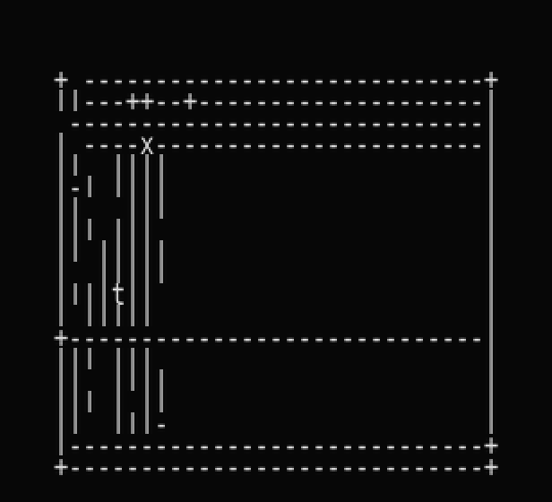
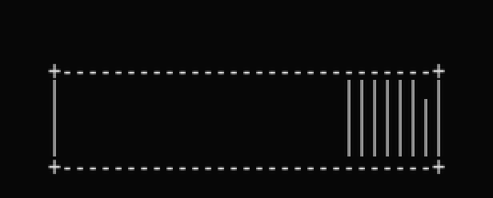
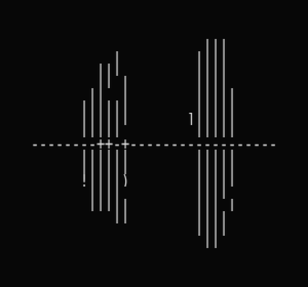
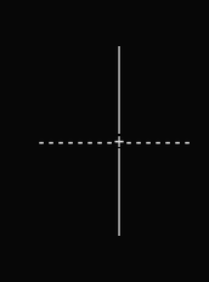
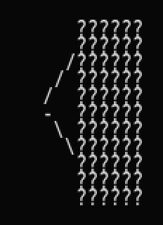
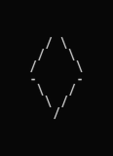
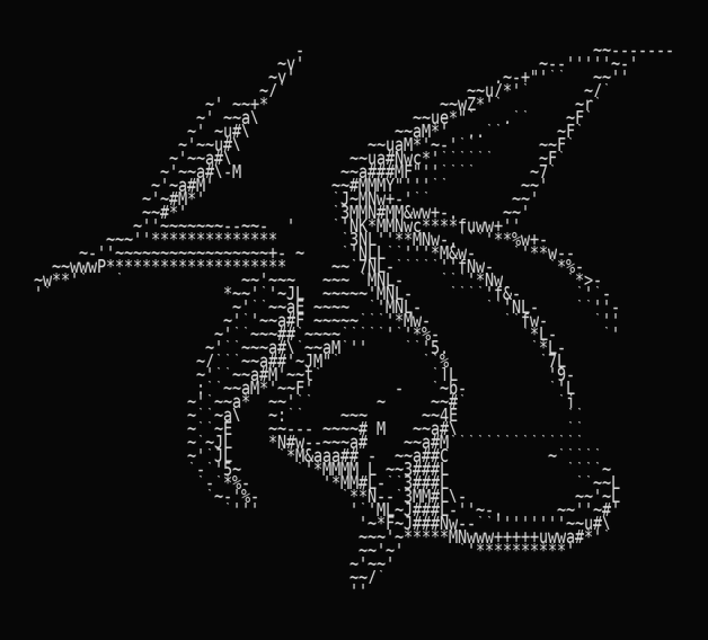
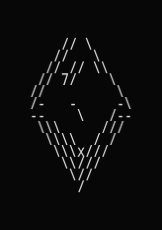
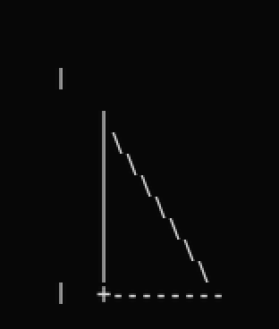
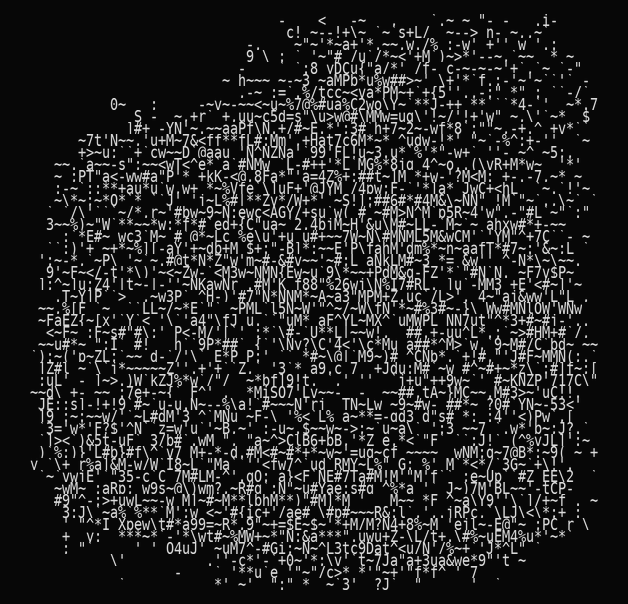

"a rectangle" — uncapped (300 ink)
# # ### #### #### ### ### ##### # # ##### ##### ## # # # # # # # # ## # # # # # # ##### ### # # # #### # # # # #### # ## # # # # # # # # ## # # # # # # #### #### ### ### ##### # # # #####
Fig. 1 — "a lighthouse": an unedited generation from the final model, rendered through its own glyph atlas — lamp room, gallery, tapering shaft, rocky base. This prompt collapsed to scattered marks two training cycles earlier; the restoration is the direct result of the long-repetition schedule and rare-caption upsampling of §3. The reveal order here is presentational; the live demo replays the model's actual commit order.
An ASCII picture is a point in V^(48×80) with
|V| = 98: 96 printable ASCII characters plus
[PAD] and [MASK]. Conditioned on a caption
c, the model represents p(x|c) and samples from
it. Two framing decisions drive everything downstream. First,
characters are the tokens — generating pixels and converting
afterward caps quality at the converter and can never exhibit
character-level intent (choosing () for a curve because a
human would). Second, the problem is closer to language modeling than to
image synthesis — discrete symbols at exact positions — which selects
masked bidirectional modeling over both raster-order autoregression
(3,840 sequential steps; a fictitious reading order over a 2D artifact)
and continuous diffusion (a cell is / or \,
never 0.6 of each).
input grid 48×80 tokens
| embedding + 2D RoPE positions
v
+---------- block × 8 -----------------------------+
| x <- x + SelfAttention(LN(x)) 8 heads |
| x <- x + CrossAttention(LN(x), caption tokens) |
| x <- x + FFN(LN(x)) 512->2048->512 |
+----------------------------------------------------+
| LN -> Linear 512->98 (glyph head)
| LN -> Linear 512->1 (critic head)
v
per-cell glyph logits per-cell "is this right?"
Fig. 2 — 34.5M parameters: 8 pre-norm blocks, width 512. Dropout is 0.0, and that number is a measurement, not a default (§6, failure 7).
Positions. Factorized 2D rotary embeddings: half of each head's dimensions rotate by row index, half by column, so attention depends only on (Δrow, Δcol). Stroke knowledge is learned once, not per location, and the model runs on canvases up to 96×160 it never trained at — which is the entire super-resolution feature (anchor the source characters on a 2× canvas, mask the gaps, inpaint).
Conditioning. Prompts are embedded by a frozen CLIP text encoder; up to 24 token vectors feed cross-attention in every block (compositional addressability — a hull cell can attend to "sailboat" while another region attends to "two"), and their pooled mean joins a global additive vector along with a mask-ratio embedding — the model always knows how far along the decode is, the analogue of a diffusion model being told its noise level. All conditioning projections are zero-initialized, so the pathway is an exact no-op at splice time: text conditioning was retrofitted onto a checkpoint trained without it, and later retrofits (the critic head) reuse the same trick.
prompt "a lighthouse" mask ratio 0.62
| |
frozen CLIP text encoder sinusoidal embedding
| |
24 token vectors ----> pooled mean ----> [ + ] ----> global vector
| (added to every cell)
v
cross-attention in every block
(per-cell addressing: one cell attends
to "lighthouse", another to "a")
Fig. 3 — the conditioning pathway. Token vectors give compositional control through cross-attention; the pooled mean and the mask ratio steer globally — the model always knows its own noise level.
Critic. A 513-parameter linear head predicts, per visible cell, "is this glyph correct?" — trained for free from labels the self-context corruption already computes (§3), consumed at decode time to rank commitments and select revisions (Token-Critic [2]).
The objective is masked restoration: hide a random fraction of cells, predict the originals given the survivors and the caption. Four modifications, each purchased with a documented failure:
w = (1−f)/f for measured space fraction f
(equal total gradient share for space and ink), recomputed per dataset
because a constant tuned on one corpus is a measurement of that corpus in
disguise.| for
/ costs less than @), and an auxiliary MSE
compares the differentiably rendered expectation of the prediction with
the rendered target — the loss sees what the eye sees. ground truth --mask 15-100%--> [ truth | ############ masked ]
|
no-grad forward, sample every cell
|
reveal a slice of the model's OWN samples
|
[ truth | model commits | ##### still masked ]
|
trained forward
|
loss on EVERY originally-masked cell --
the self-committed ones included
Fig. 4 — self-context training. Inference always conditions on the model's own commits; this puts that state into the training distribution. Scoring the self-committed cells is the load-bearing clause (§6, failure 8): excluding them taught the model its own errors were legitimate context.
Curriculum. Three stages — procedural geometry, synthetic captioned subjects, human-made pieces — at decreasing learning rates, with earlier stages replayed into every later stage at non-trivial fractions (~20%): single-hop replay at 3% measurably erased geometry by the end of training. Rare captions are upsampled toward the ~1000-exposure threshold that knowledge-capacity scaling work [7] associates with full-fidelity storage, and the masked objective tolerates data repetition far beyond autoregressive norms — random masking is itself per-epoch augmentation [6].
Fig. 5 — geometry-stage loss, six epochs, from the actual training log of the self-context run (space-weighted cross-entropy plus auxiliary terms). The train series is the in-epoch running mean, which resets at epoch boundaries; validation is evaluated on the EMA weights, which is why it can sit at or below the live-weight train curve. Validation improves monotonically except a single epoch-4 blip.
Captioned ASCII art does not exist at scale, so the training set is manufactured caption-first — every label correct by construction:
caption --> t2i --> trim --> flatten --> convert --> ink --> CLIP --> (grid, bank image border background to glyphs band filter caption)
Fig. 6 — one generated image yields up to nine training samples: three style dialects (silhouette / outline / tonal, selected at inference by caption tags) × itself plus count and pair composites tiled from already-paid-for singles.
The engine is 20% generation and 80% quality control; its five documented failures (letterboxing that taught the model to draw frames, an ink-quota binarizer that blobified photographs, a 93%-chimera prompt bank, contrast enhancement that amplified paper texture into a canvas-wide film, dialects that collapsed into one on stroke-drawn subjects) are catalogued with the others in §6 and in the project's study guide. Tone has a resolution floor — tone variety scales with cell count [9] — so subjects whose tonal conversion inks under 8% of the grid route their untagged caption to the outline dialect instead: at 48×80, line structure is the legible strategy for sparse subjects.
MaskGIT-style iterative parallel unmasking: sample every masked cell, commit the most confident, repeat under a cosine schedule; classifier-free guidance ramps from 1 to full scale across scheduled steps. Two domain-specific pathologies required surgery, and both diagnoses came from probes rather than theory:
The blank attractor. On a sparse canvas the most confident early predictions are always spaces; committed blank becomes the context for more blank. Countered in training (space weighting, ratio max 1.0) and at decode (an annealed anti-space logit bias, exploration noise on commit order).
Parallel-commit edge echo. The cosine schedule commits the most cells in its final steps, and the cells left last are precisely the ambiguous ones — every column an unseen edge could fall on. Mass-committed in one parallel step, each samples a different answer: several offset copies of the same edge. An inpainting probe isolated the mechanism (visible half of a rectangle → clean pinned region, a band of competing edges exactly where the hidden edge could be), and the fix is a tail-only commit cap: the head of the decode runs free (layout forms under exploration and rising guidance), and once the mask ratio falls below 0.35 commits are capped at 8 cells per step, resolving the ambiguous tail sequentially. A/B at fixed seed: "a cross" went from 155-ink multi-stroke chaos to a perfect 28-ink cross; capping the whole decode instead collapsed sparse prompts to blank — the two regimes need opposite treatment, which is the finding.
mask ratio 1.0 ------------------- 0.35 ------------------- 0.0
| HEAD: uncapped | TAIL: cap 8 / step |
| exploration noise on | greedy + sequential; |
| commit order; guidance | each commit becomes |
| rises 1 -> full scale; | context for the next |
| layout forms | decision |
+--------------------------------------------------+
blank attractor lives edge echo is born here:
here -- anti-space bias the ambiguous cells are
and noise keep early committed last, and the
ink alive cap serializes them
Fig. 7 — the two-regime decode. Head and tail fail in opposite directions and need opposite treatment: freeing the head fixed blank collapse ("a dragon" 8 → 865 ink), capping the tail fixed the echo ("a cross" 155 → 28 ink), on the same checkpoint.




Fig. 8 — the edge echo and its cure, real probe outputs: same checkpoint, same seed and guidance; the material change is the tail-only commit cap. Every offset stroke in the left panels is a separately-committed hypothesis for the same edge.



Fig. 9 — the inpainting probe that separated "the model doesn't know shapes" from "the decode can't coordinate": shown the left half of a diamond, the capped decode completes it at 100% cell accuracy, 100% ink precision and recall. Knowledge was never the problem.



Fig. 10 — final-model outputs, unedited. The dragon is the best of four seeds under the canonical decode — which is precisely the serve-time selection policy (§5): across those four seeds the same settings produced 90 to 979 ink cells, so single-seed judgments of a stochastic sampler mislead in both directions. The geometry pair is drawn after the full three-stage curriculum — the primitives survived two later training stages intact (the replay result of §3).
Serve time. k candidates are drawn and re-ranked by CLIP over the rendered grids (best-of-k); the intermediate grids double as the site's materialize animation — the visualization is the algorithm, unmodified.
Nine failures shaped the system. Each is stated as symptom → cause → fix; the lessons are the paper's real payload.
Reconstruction excellent, free generation empty. Cause: class prior (80% space) × confidence-first commitment — the majority class commits first and becomes everyone's context. Fix: three levels at once — loss reweighting, mask-ratio coverage of the start state, annealed decode bias. Lesson: imbalance plus confidence ordering is a feedback loop, not a bias.
"A cross" at scale 3 → several crosses. Cause: the strongest "more prompt-like" direction is more instances of the subject's features. Fix: calibration (~1.5–2), surfaced as a knob. Lesson: a knob's textbook meaning is a hypothesis in a new domain.
"X and Y" images fused into monsters; the bank was silently 93% pairs. Cause: combinatorics (n² pairs vs n singles) × few-step t2i models fusing subjects. Fix: explicit 75/15/10 category mix; later, composites manufactured from singles with labels correct by construction. Lesson: every dataset property you don't set explicitly is set implicitly.
Multi-GPU training crashed in the gradient reducer; single-GPU was
fine. Cause: a learned null token entered the graph
only when a batch happened to contain uncaptioned samples.
Fix: unconditional where-selection;
proven by a 2-process CPU smoke test that later caught the same trap a
second time when the critic head landed. Lesson: no
data-dependent control flow over parameters; keep the cheap distributed
test forever.
Hours into a run: received 0 items of ancdata.
Cause: torch tensors cross process boundaries by
fd-sharing; a steady stream leaked descriptors. Fix:
workers return numpy; spawn, not fork, under a CUDA parent.
Lesson: compute types ≠ transport types; long runs
find leaks tests cannot.
Rejection logs spiked at exactly 0.900 ink. Cause: letterboxed images converting to solid sidebars, plus an ink-quota binarizer. Fix: the full intake chain, tuned on cheap preview batches; keep rate 10→78%. Lesson: log why rejects happen — the spike was the entire diagnosis.
Conditioning wired and verified, output caption-agnostic; a 64-grid memorization test stuck at loss ~1.0. Cause: at high mask ratios the only route to the answer is the precise caption pathway; zeroing 10% of activations makes it unreliable, so training settles for robust texture. Same model, dropout 0: loss 0.034 — 30× from a regularizer. Fix: dropout 0; random masking is the regularizer. Lesson: defaults are not free, and tiny memorization tests separate optimization pathology from capacity.
Shapes drawn with nested duplicated borders, immune to every decode knob. Cause: two problems in one costume — exposure bias (training never shows the model its own commits) and parallel-commit multimodality (§5). The first self-context implementation excluded committed cells from the loss and made the echo worse while every training metric looked healthy: it taught the model to trust its own mistakes. Fix: loss over all originally-masked cells (the model learns to contradict its errors) plus the tail-only commit cap. Lesson: the loss mask carries the sign of the lesson; validate training-side fixes with decode-side probes.
Spotted by eye in a probe's ground-truth panel: the "triangle" primitive drew three rays from one vertex — an open fan. 200k samples taught it as truth, and the model's fan-completions suddenly made sense. Fix: close the hypotenuse. Lesson: synthetic labels are only correct by construction if the construction is correct; render every primitive and look at it.
| intervention | result | verdict |
|---|---|---|
| dropout 0.1 → 0.0 | 64-grid memorization loss 1.0 → 0.034 | adopted |
| self-context, loss on committed cells | echo eliminated at the root (with cap) | adopted |
| self-context, loss on masked cells only | echo worsened; healthy training metrics | rejected — sign flip |
| tail-only commit cap (8/step below ratio 0.35) | cross 155→28 ink, clean; full-decode cap blanked sparse prompts | adopted, tail only |
| rise guidance keyed to step progress | removes capped-decode dead zone at scale ~1 | adopted |
| Halton low-discrepancy commit order [4] | glyph soup — 94 of 96 glyphs as speckle; position-forced commits seed noise on blank-dominated marginals | rejected — does not transfer from dense VQ grids |
| ReMDM-style in-loop remasking [3], confidence-scored | strips fragile early ink seeds; sparse prompts 70→4 ink | shelved pending critic scoring |
| zero-shot coarse-to-fine (generate small, anchored upscale) | upscale bridges 1-wide strokes into doubled lines | rejected untrained; scale-trained variant future work |
| 30-epoch shading stage + rare-caption upsampling | sparse-subject restoration — the Fig. 1 lighthouse, previously a 44-ink scatter | adopted |
| critic head (513 params, aux weight 0.1) as commit ranker | quality collapse (lighthouse 380→44 ink) — too weak a judge; Token-Critic used a dedicated transformer | rejected at this scale; revision-only role untested |
Table 1 — every adopted setting was decided by fixed-seed A/B probes on standard prompts; two 3-0-literature-verified techniques failed those probes anyway. The probes, not the papers, are the authority.

Fig. 11 — what a negative result looks like: "a dragon" under the Halton low-discrepancy commit order — 2,635 ink cells using 94 of the 96 glyphs, pure speckle. Position-forced early commits sample from near-uniform marginals on a blank-dominated canvas, then texture grows around the noise. The same checkpoint drew coherent tonal art under confidence ordering.